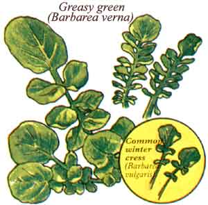

This forageable is so popular in the South it's sold in grocery stores. But you can raise your own!
When we moved (from up north) to our Tennessee homestead a few years ago, we discovered a delicious-and almost year-round-vegetable that's not only a culinary delight but also a gardener's dream: It requires virtually no care at all . . . plants itself every year . . . and survives unprotected even in snowy, sub-zero weather. Known in these parts as "creasy greens" or simply "creasies", this land-loving cousin of watercress looks and tastes much like its aquatic relative, but literally grows like a weed-even in poor, sandy soil-and provides us with fresh salad makings from the garden during a season when most folks can only leaf through seed catalogs and dream of warmer days.
A LESSON LEARNED
When we first noticed creasies growing in the long-neglected garden of our new home-place, we mistook them for common winter cress and-since we'd tried that forageable before and hadn't cared for its bitter aftertaste-promptly plowed the greenery under, right along with the rest of the weeds and overgrowth. [EDITOR'S NOTE: Most of MOTHER's foragers are very fond of both young winter-cress greens and the unopened flower buds.] But when patches emerged again the following year, one of our wise neighbors pointed out the plants' characteristic difference: Although a sprig of common winter cress has one to four pairs of small leaves below a large, rounded end leaf, creasy greens have from five to ten sets of lateral leaves below a bigger leaf. He suggested that we give the plant a try, and we're glad we took his advice. We discovered that the sweet-tasting but pungent fresh leaves-when chopped finely-make a wonderfully piquant topping for tacos and salads, and when cooked in quiches and other dishes become as mild as spinach.
[EDITORS NOTE: Actually, the plant Ms. Marengo describes is winter cress . . . but a different species: Barbarea verna, which is also known as early winter cress, Belle Isle cress, or - in the South - creasy greens or scurvy grass. Its closest relative, Barbarea vulgaris (common winter cress), ranges farther north than creasies - up into Ontario and Nova Scotia - and south to Missouri and Kansas. Barbarea verna can be found from Massachusetts southward . . . and both varieties are also distributed, although sparsely, in the central Plains and the Northwest. Folks living in the Pacific states canen joy Barbarea orthoceras, or American winter cress.]
A PLANT OF MANY VIRTUES
Since those first few experiments in creasy cookery, we've found the greens to be eminently edible right up to the point when they begin to go to seed (they also seem to be not quite as flavorful when plucked while frozen solid). And in addition to tasting good, creasies rate extraordinarily high in nutritive value. Euell Gibbons reported in his book Stalking the Healthful Herbs that 100 grams of winter cress contain an impressive 5,067 I.U. of vitamin A and 152 milligrams of vitamin C! By comparison, the same weight of raw broccoli spears rates only 2,500 I.U. of vitamin A . . . and oranges (which of course are universally acknowledged as a good source of vitamin C) provide a comparatively measly 50 milligrams of C per 100 grams!
In addition, creasy greens just have to be among the easiest of all plant varieties to grow. Outside of striving to improve our garden soil overall, we do next to nothing to help our creasy crop along. Our original stock managed to survive in a terribly acidic sandy soil (the pH was 4.2!) where even other weeds were sparse . . . and now that we've limed, cover-cropped, and manured the garden over several seasons, the plants positively flourish. Since some of our friends raise their greens in heavy clay, it's obvious that this member of the cress family is not particularly picky when it comes to its growing medium.
GROW YOUR OWN
Actually, the only real precaution we take with our crop each year is to make certain we allow a few plants to go to seed. Creasies herald spring's arrival by bursting into sweetscented bouquets of golden yellow blossoms (which honeybees seem to love . . and which, when brought into the house, brighten any window and perfume the room with a heady fragrance). Long, slender seedpods form on a central stalk, and you can either let the plants sow themselves . . . or gather the seed (after allowing the nuggets to mature) and create a somewhat more orderly planting of your own.
The greens lend themselves especially well to broadcast planting in double-dug raised beds: Just scatter the seeds thinly and rake them in lightly. Or if you prefer, you can drop seeds in traditional furrows spaced one foot apart and then cover them with a quarter-inch of fine soil. It's not really necessary to pull up excess plants-creasies don't mind being crowded-but if you want to grow extra large foliage, thin the seedlings so that they are four to six inches apart.
We've found that the seeds sprout best during cool, damp weather. Ordinarily, we sow the creasies-to-be during a rainy spell in late summer or early fall . . . and by winter the plants produce harvest-sized leaves. And, if planted as soon as the ground thaws enough to be worked, Barbarea will produce a spring/summer crop, too! We gather ours by simply pinching off the outer foliage, which is quickly replaced by new growth.
And that brings me to the best part of all about old-time Tennessee creasy greens: the eating!
COOKING WITH CREASIES
Creasy greens are amazingly versatile when it comes to brightening up winter fare. You can try them in any recipe that calls for watercress or cooked spinach. Steamed creasies tossed with melted butter are delicious . . . and the raw leaves are wonderful in tacos, salads, and slaws, and (in partnership with sprouts, cheese, and tomatoes) make a terrific sandwich.
For some really rave reviews from family and friends, try either of these recipes.
CREASY CONFETTI EGGS
4 eggs, beaten
2 to 3 tablespoons of milk salt and pepper to taste
I cup of creasy greens, finely chopped
1 medium onion, minced
1 clove of garlic, minced
1/2 red bell pepper, finely chopped (optional)
butter or oil for sauteing tamari to taste
Mix the beaten eggs together with the milk, salt, pepper, and greens. Then saute the onion, garlic, and red pepper in butter or oil over medium heat until the onions are transparent and the peppers are soft. Next, make sure that the saute pan is hot enough to make a drop of egg sizzle . . . add the egg mixture . . . and scramble everything together until the creasies turn bright green and the eggs firm up nicely. Sprinkle the confetti eggs with tamari and serve them over whole wheat toast.
CREASY QUICHE
1 clove of garlic, minced
1 cup of chopped onions
2 tablespoons of butter
pie shell, uncooked (try using whole wheat flour)
1-1/4 cups of grated cheese (Monterey Jack or Swiss is good)
3 eggs, beaten
2-1/4 cups of milk
1/2 cup of powdered milk
1/2 to 3/4 teaspoon of salt dash of pepper
1 to 2 cups of creasy greens, chopped
Preheat your oven to 350°F. Saute the garlic and onions in butter and-after letting them cool awhile-spread them in the pie shell and sprinkle the grated cheese on top. Then mix the remaining ingredients and pour the concoction over the cheese (don't worry . . . the creasies will wilt and shrink as they cook). Bake the quiche for 40 to 45 minutes or until the crust is golden and the custard has set (a toothpick, when poked into the pie, should come out clean). Let the quiche cool before serving.
EDITOR'S NOTE: The author has kindly offered to mail a packet of 200 creasy green seeds to anyone who sends $1.00 and a stamped, selfaddressed envelope to Fran and Bob Marengo, Dept. TMEN, Rock Creek Route, Box 102, ,famestown, Tennessee 38556.
|
 |
|
|